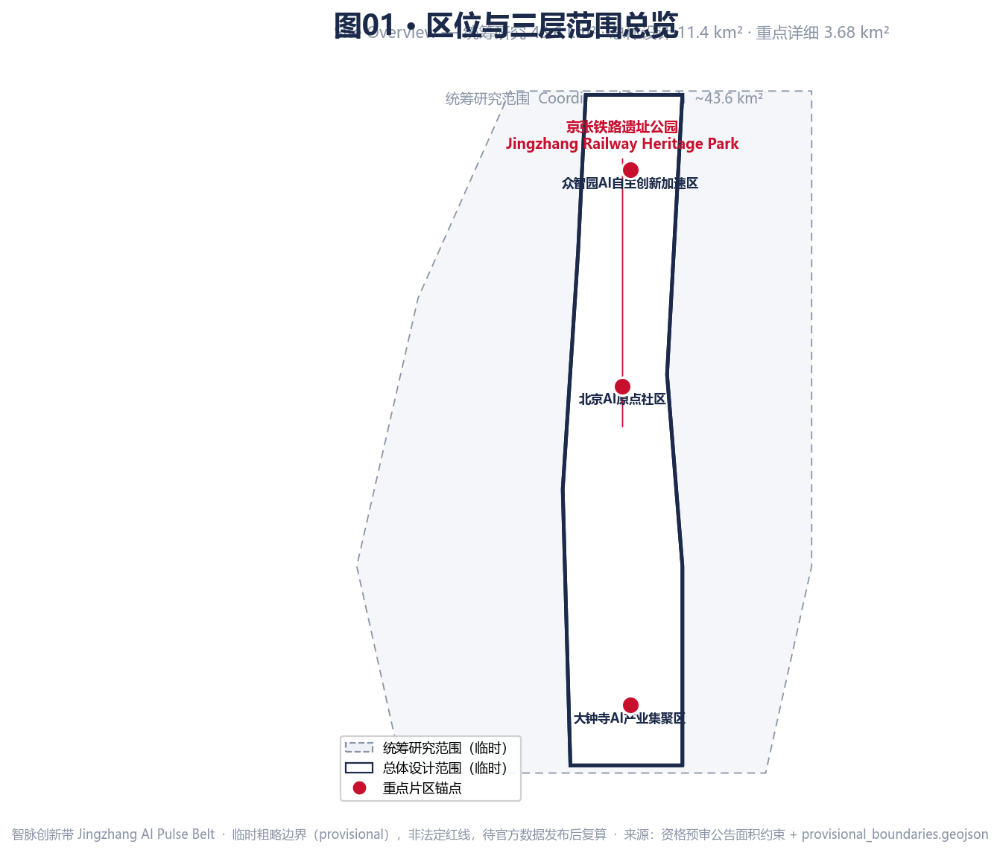
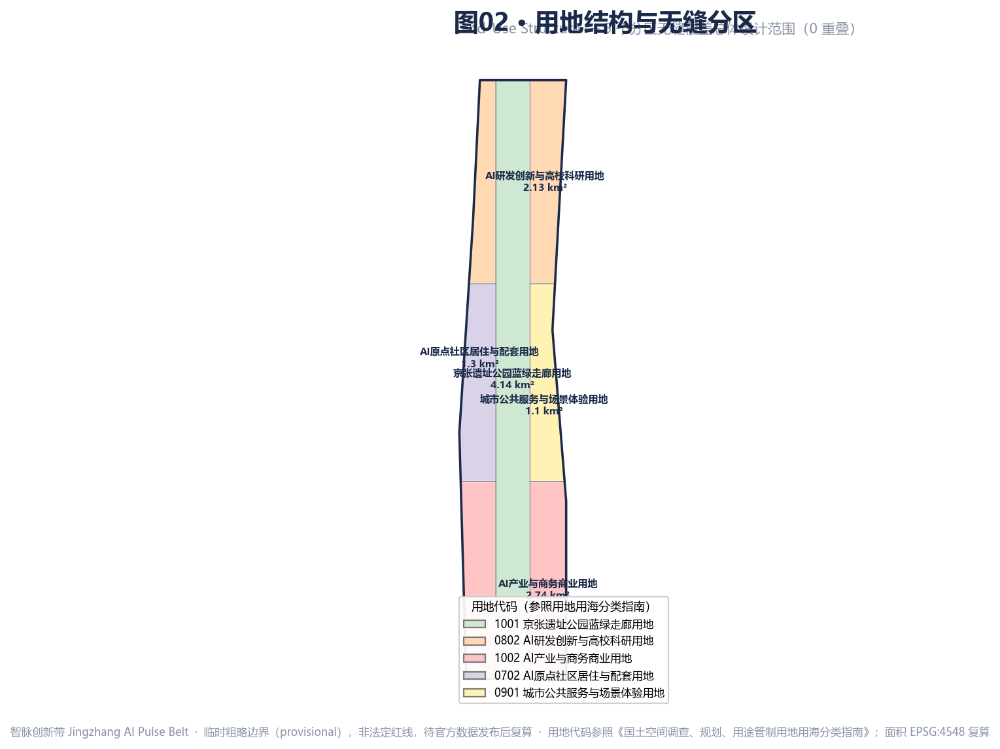
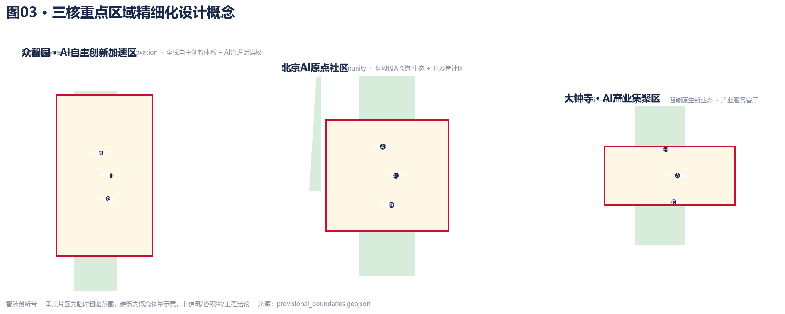
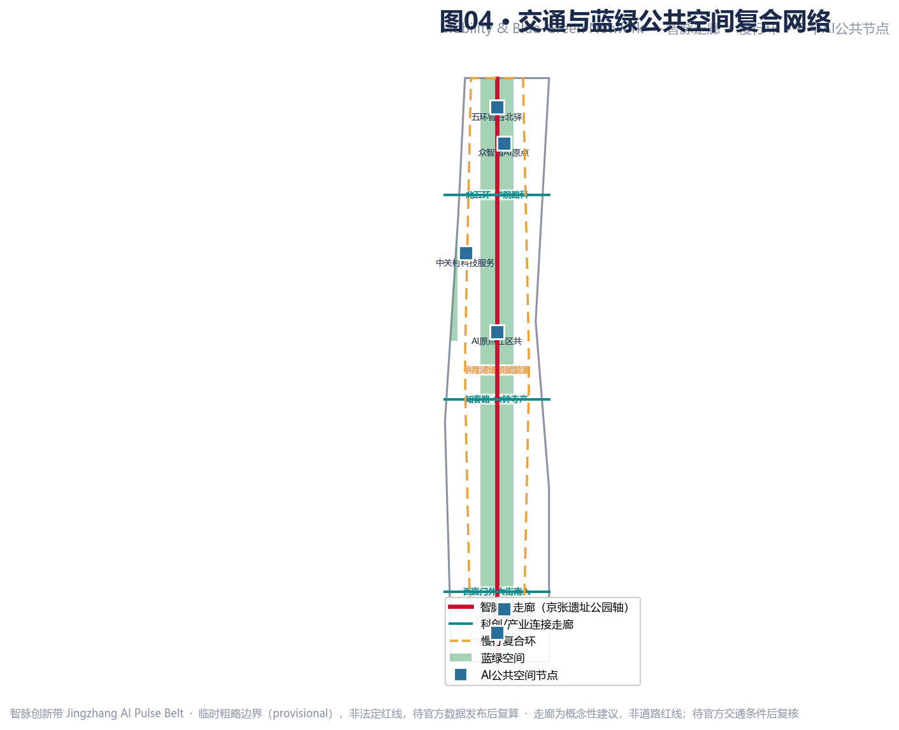
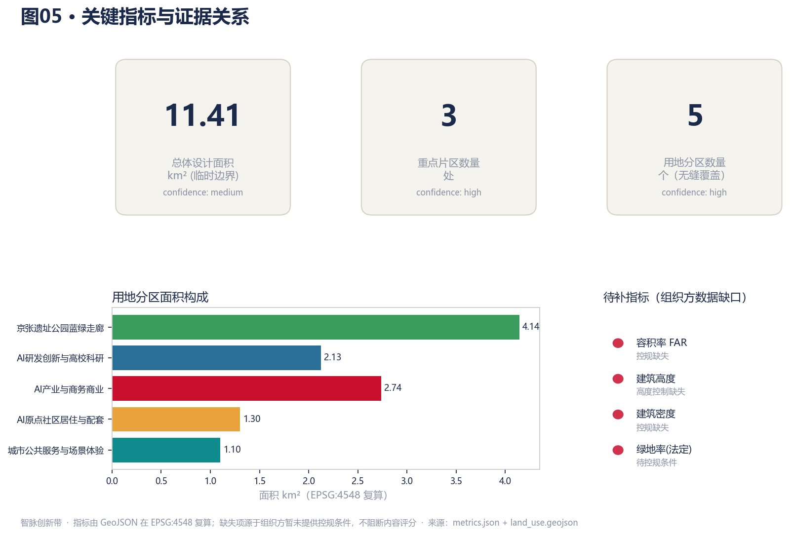

以京张铁路遗址公园为历史与公共空间主轴，以众智园—北京AI原点社区—大钟寺三核为创新锚点，以中关村科技服务翼与小月河场景赋能翼为两翼，形成“一带三核、多点场景、蓝绿慢行复合环”的 AI 创新带概念方案。
Key Metrics — 由 GeoJSON 在 EPSG:4548 下复算；缺失项源于组织方暂未提供控规条件，不阻断内容评分。指标来源：site_boundary / green_space / public_space 图层。
Site Overview Map & Land-Use Layout — 覆盖三层范围（统筹研究43.6 / 总体设计11.4 / 重点详细3.68 km²）


agent.1 · Overall Concept & Naming System
“智脉”取京张铁路自主创新精神脉络，与AI智能脉搏双关；“脉”指铁路遗址线性脉络与数据算力人才流。
智源（众智园·全栈自主创新）
智心（AI原点社区·创新生态）
智汇（大钟寺·智能原生业态）
中关村科技服务翼（资本·IP·技术转移）
小月河场景赋能翼（场景验证·活力城市）
铁轨横截面 + 脉冲波
京张朱红 #C8102E · 智脉靛青 #1B2A4A · 创新金 #E8A33D
agent.1-2 · Three Key Areas Detailed Design Concept

全栈自主创新孵化器 + 算力算法中试楼 + 开源协作工坊。定位：AI全栈自主创新体系策源 + AI治理全球话语权。
AI原点社区中心 + 开发者公寓 + 原点孵化器。定位：世界级创新生态 + 开发者社区，24h活力。
智能原生商业体 + AI企业总部 + 产业服务客厅。定位：智能原生新业态，站城一体。
agent.4 · 交通慢行 Mobility & 蓝绿公共空间 Blue-Green Public Space

L1 京张1909智脉门户
L2 智源广场
L3 五环智谷北驿
京张遗址公园智脉走廊（南北蓝绿主脉）
+ 小月河场景赋能翼绿廊（横向）
智脉走廊主轴 + 东西科创/产业连接走廊 + 慢行复合环（概念建议，非道路红线）
agent.3 · AI+ Scenarios, Testbeds & Personas
V1 众智园全栈中试场
V2 小月河AI开放街实验室
V3 大钟寺智能原生商业试验场
P1 研究者/开源开发者
P2 创业者/企业研发
P3 学生/终身学习者
P4 居民/家庭（含老人/无障碍）
P5 国际访客
所有AI场景均设隐私边界与人工复核机制；仅用公开脱敏数据；不替代人工判断；不适老化被排除。
agent.5-6 · Cultural Narrative, Long-Term Operation & 更新项目 Renewal Projects
① 百年京张线（1909铁路·詹天佑自主精神）
② 中关村创新线（电子街→科学城→AI原点）
③ AI新文化线（开源协作·人机共生·全球治理）
城市气质：自主·开源·共生·可及
春 · 京张AI开源周（开发者大会）
夏 · AI开放街实验季（小月河验证）
秋 · 智脉创新盛典（产业转化+国际论坛）
冬 · AI治理共识峰会（全球治理话语权）
一期（2026-2028）大钟寺AI产业起爆：智能原生商业体、AI企业总部、产业服务客厅。二期（2028-2031）AI原点社区更新与遗址公园中段：AI原点社区中心、开发者公寓、原点孵化器。三期（2031-2035）众智园自主创新加速：全栈孵化器、算力算法中试楼、开源协作工坊。建筑为概念体量示意，非建筑/容积率/工程结论。
Metrics Evidence · 任务覆盖 Task Coverage · 自检状态 Self-Check Status

公告 1.3 / 1.4 / 1.5 + agent.1–6 共 40 条逐条映射（compliance_matrix.json）
9 项专业标准全覆盖（standard_matrix.json）
15 项成果深度全部 complete（design_depth_matrix.json）
自检（self_check）状态：deterministic validation 通过、spatial review 通过（land_use 无重叠、key_area 齐备）、visual packaging 通过（含必需文本标记与 data-metric）、professional evidence 通过（design_depth 全覆盖）。临时粗略边界保留精度警示，待官方数据补齐后复算。
Assumptions, Sources & Self-Check
来源 Sources： 资格预审公告 agent 任务书 provisional_boundaries.geojson 城市设计管理办法 用地用海分类指南 生成式AI服务管理暂行办法